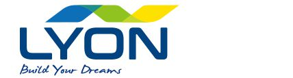
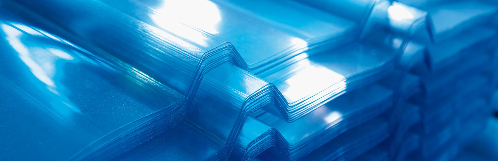
63 種浪型、每片都有共擠 UV 保護層、透光率最高 92%。溫室、廠房天窗、雨遮、DIY 屋頂都適用。台灣製造，外銷 30 多國。
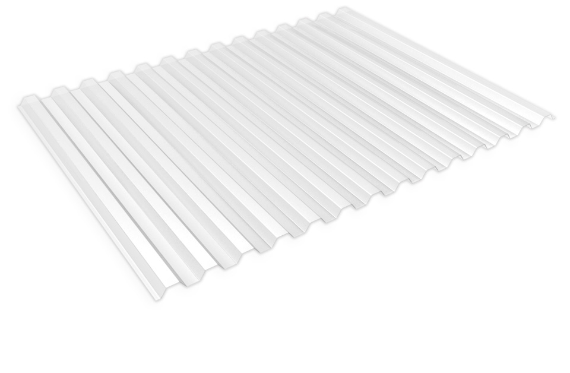
角浪、GRECA 方浪、ROMA 圓浪、MINI 小浪，以及對應金屬屋頂的浪型。厚度 0.7–2.0 mm，14 種顏色。
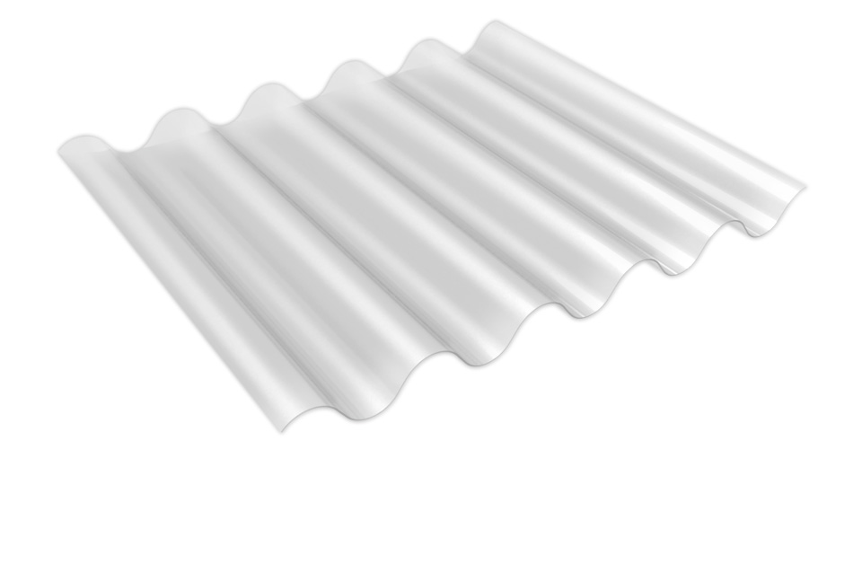
深浪的 AJONIT、高剛性、TRIMDEK 浪型，適合廠房屋頂與大跨距天窗。
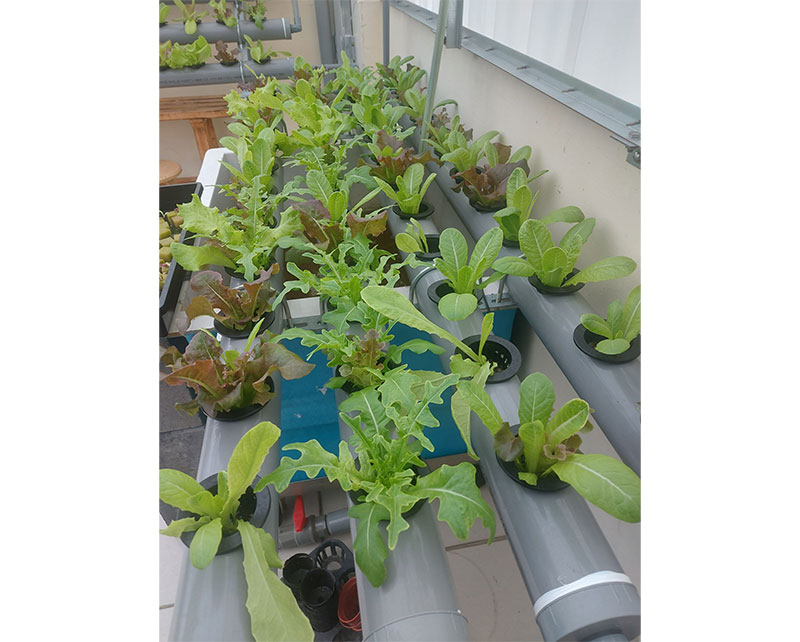
把陽光均勻散開，不燒葉、沒有熱點，適合蔬菜、蘭花與育苗。
用浪距、浪高、有效寬度篩選 63 種浪型，或直接用常見金屬屋頂板型查詢［對應清單待確認］。採光板直接搭在既有屋頂上，不用另做泛水。
每個應用頁都會推薦合適的浪型、厚度與顏色，並附實際安裝的工程照片。
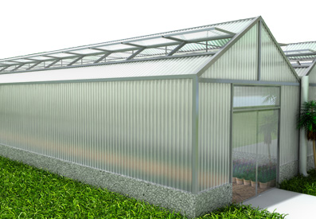
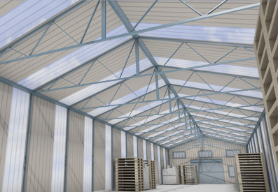
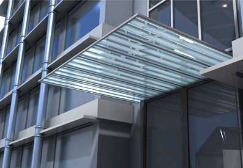
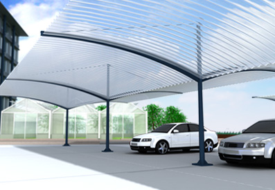
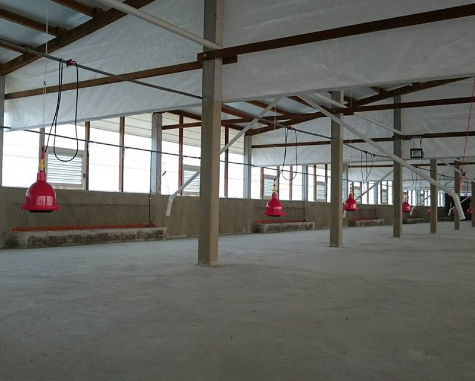
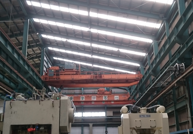
每片板材都共擠 40 µm 的 UV 保護層，生產時每小時檢查押出穩定度，出廠前以美國 QUV 耐候試驗機加速老化測試。
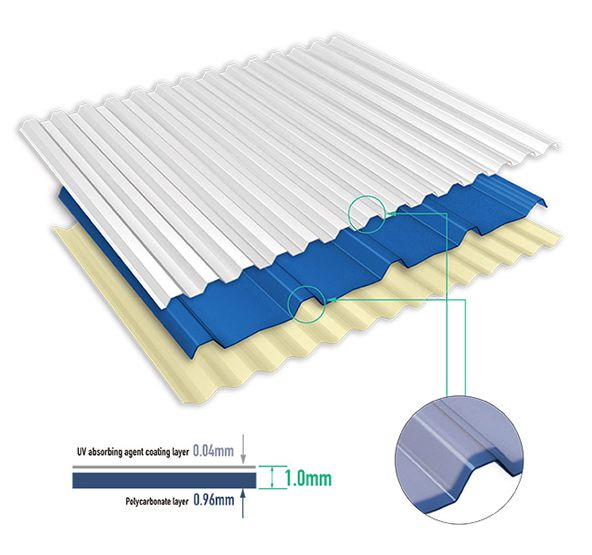
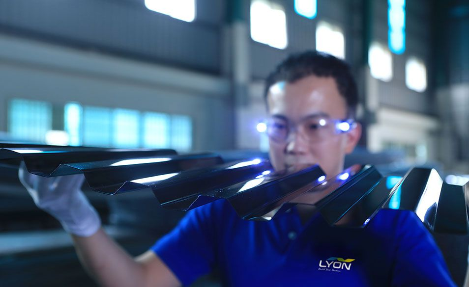
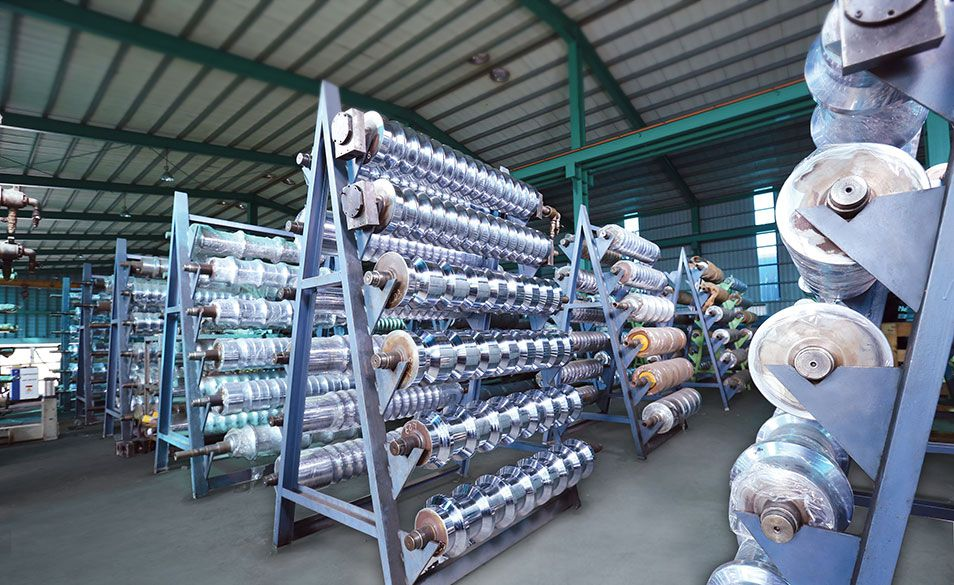
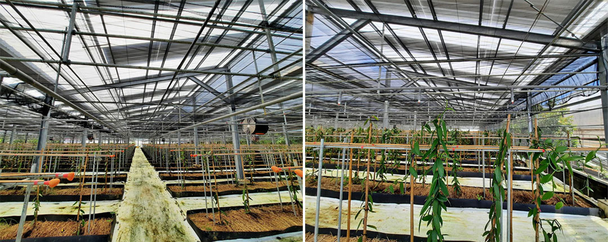
擴散板做到 50–70% 均勻遮光，農友觀察到生長週期加快、提早採收。
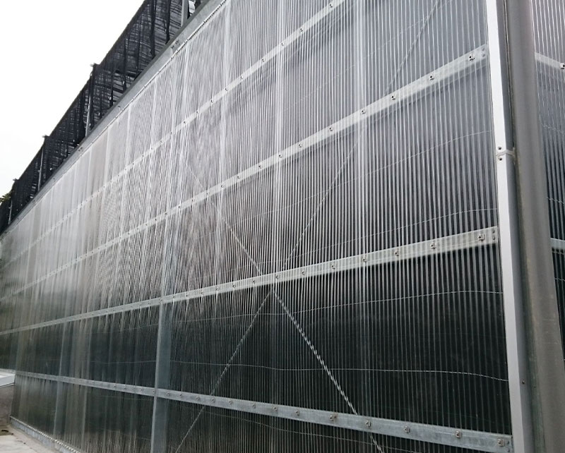
以 PC 浪板做透光外牆，室內有自然光，室外擋風雨。
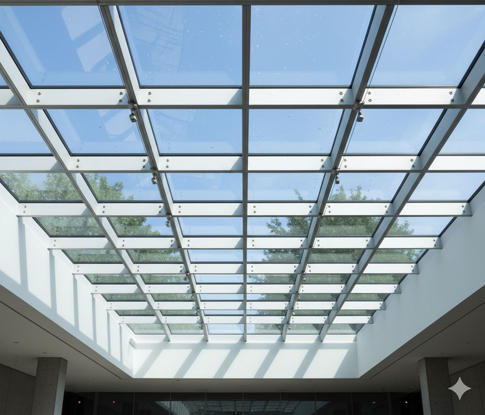
玻璃、壓克力、玻璃纖維、PC 板 — 耐用度、成本與透光率一次看懂。
整櫃或專案數量報價、樣品裁片［待確認］、OEM 與經銷商的客製浪型開發。